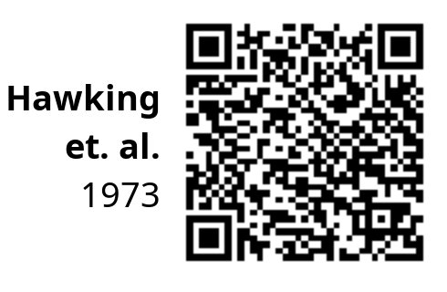
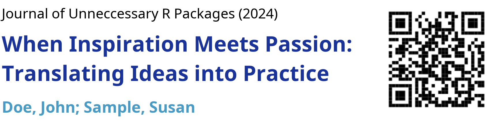
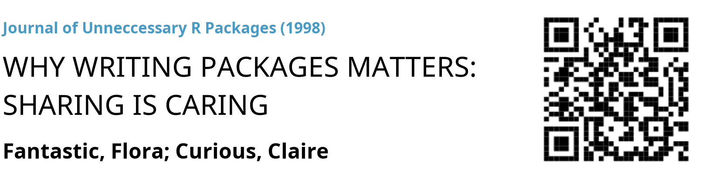
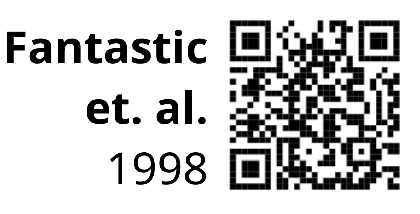

namedropR provides ‘visual citations’ containing the metadata of a scientific paper and a ‘QR’ code.
Installation
To install, simply run:
install.packages("namedropR")You can install the development version of namedropR from GitHub with:
# install.packages("remotes")
remotes::install_github("nucleic-acid/namedropR")Visual Citations
A ‘visual citation’ is a banner containing an article’s title, authors, journal and year of a publication (s. example below).

One might want to include this in a presentation
- to back up one’s claims,
- to drop an important name,
- to boast about a publication in a ‘high impact journal’.
Some might even use this to genuinely point the audience to good resources for further reading.
On conferences, such banners are frequently displayed way too short for the audience to actually comprehend them (and often in a bad resolution). Creating visual citations requires manually taking a screenshot and placing it on the slide.

namedropR helps to generate visual citations conveniently (see below), in high resolution and with a QR code. This allows the audience to follow the reference while you are talking about it, instead of looking it up in a reference list at the end of your talk.
There is also a less intrusive, compact style, as seen on the left.
Basic Usage
Working with bibtex bibliographies
This package accepts bibliographic information as ‘BibTeX’ and ‘BibLaTeX’ references and includes a QR code pointing to the ‘DOI’. If the ‘DOI’ is not available in the bibliography entry, but a ‘URL’ field instead, this is used. If neither is given, the QR code points to a search call at https://scholar.google.com with the available data as search terms.
bib_path <- "path/to/bibliography_file.bib"
# load the package
library('namedropR')
drop_name(bib_path, cite_key = "SomeAuthor2010")drop_name() by default returns the file path, where the visual citation was stored as character string. Within an Rmarkdown/HTML presentation you can render the VC and directly pass the path to htmltools to include the banner:
# PNG
htmltools::img(
src = drop_name(
bib_path,
cite_key = "SomeAuthor2010",
export_as = "png"
)
)
# HTML (note the recommended option use_xaringan, see documentation for details)
htmltools::includeHTML(
drop_name(
bib_path,
cite_key = "SomeAuthor2010",
export_as = "html",
use_xaringan = TRUE
)
)To bulk-create VCs to include in another kind of document / presentation slides you can pass a vector of citation keys or pass no keys at all to render some or all bibliography entries respectively:
Pulling data from Crossref
If you don’t have a *.bib file, but DOIs instead, you can pass them to drop_name_crossref() which pulls the data from Crossref and passes the downloaded data on to drop_name().
TEMPORARY NOTE: Due to recent API changes in Crossref you need to have {rcrossref} version > 1.1 installed. As long as {rcrossref} v1.2 is not yet available on CRAN, installing the development version >= v1.1.0.99 might avoid error messages. If you don’t feel comfortable with installing development versions (use at your own risk!), this function will only work with CRAN version of {rcrossref} >= v1.2 installed.
# DOIs can be named vectors...
drop_name_crossref(c(cite1 = "10.1126/science.169.3946.635", cite2 = "10.1111/joms.12670"))
# ...or unnamed vectors
drop_name_crossref(c("10.1126/science.169.3946.635", "10.1111/joms.12670"))All options, that can be passed to drop_name(), can also be specified in drop_name_crossref(), for example the following call pulls data for two references from Crossref and renders them as PNG files with the ‘newspaper’ style:
drop_name_crossref(
c(cite1 = "10.1126/science.169.3946.635", cite2 = "10.1111/joms.12670"),
export_as = "png",
style = "newspaper"
)Options
It is possible to specify output format (HTML or PNG), style, size of the QR code and much more. See the vignettes for all options.
These are some frequently used options:
# create a visual citation as PNG with 'modern' design
drop_name(bib_path, cite_key = "SomeAuthor2010", export_as = "png", style = "modern")
# create a visual citation as HTML with 'compact' design
drop_name(bib_path, cite_key = "SomeAuthor2010", export_as = "html", style = "compact")
# set a smaller QR code size, default is 250 (pixels)
drop_name(bib_path, cite_key = "SomeAuthor2010", export_as = "png", qr_size = 150)
# set a wider text area for long titles or long author lists, default is 600 (pixels)
drop_name(bib_path, cite_key = "SomeAuthor2010", export_as = "png", vc_width = 800)Styles
These are the currently predefined styles:
| Name | Example |
|---|---|
| modern |  |
| modern_bw |  |
| classic |  |
| fancy | |
| clean |  |
| newspaper |  |
| compact |  |
Styling is possible via these predefined designs or via custom ‘CSS’ e.g. to match the design of the HTML presentation like e.g. ‘xaringan’ or ‘revealJS’ (see the vignette for more options).
How to contribute
If you have ideas for Visual Citation styles and think, everyone should be able to use them, feel free to open an issue and describe the style or provide the CSS code, if you have one already.
If you want to speed things up, you can fork the project to create a pull request. Please also open an issue, so we can have a discussion, if needed. See the readme for details.
Code of Conduct
Please note that the namedropR project is released with a Contributor Code of Conduct. By contributing to this project, you agree to abide by its terms.
Notes
- This package is not intended as replacement for proper reference manager packages, but a tool to enrich scientific presentation slides. Hence the functionality is quite limited to this specific use case.
- previous versions (before v2.0) allowed passing
RefManageR::BibEntry()objects. This option was removed to eliminate dependency on the orphaned bibtex package. This might break code for users of initial releases of the package, but was needed to allow for CRAN submission.